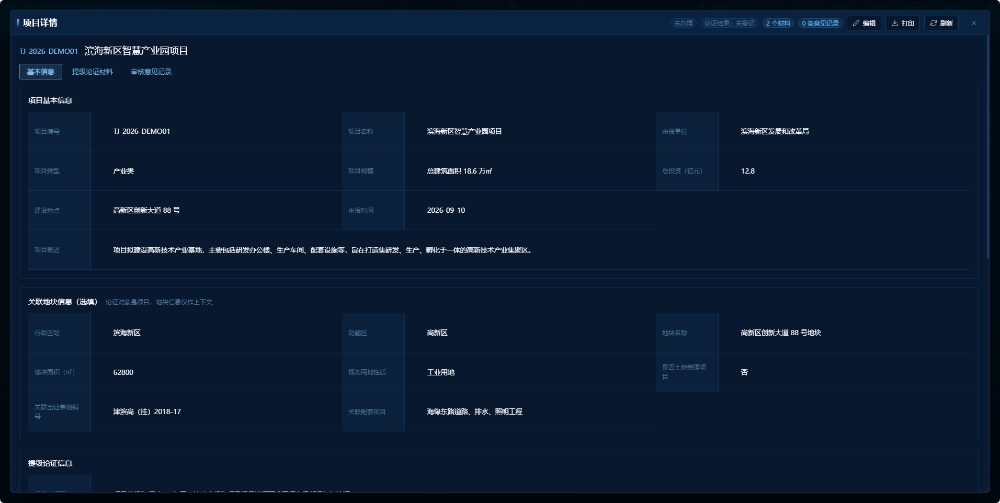
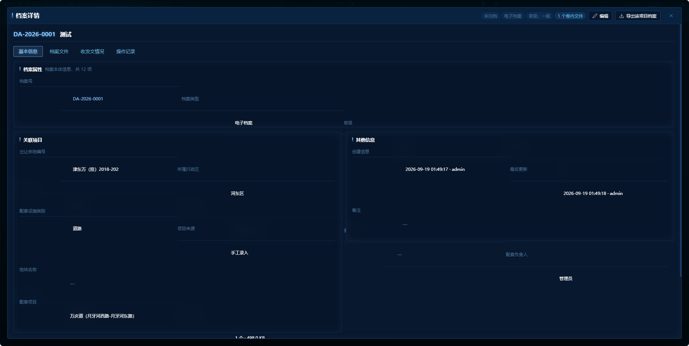
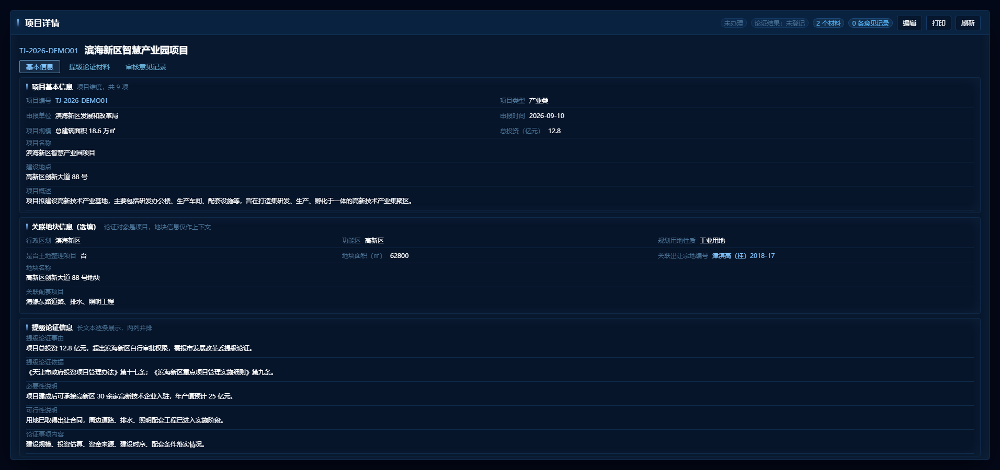
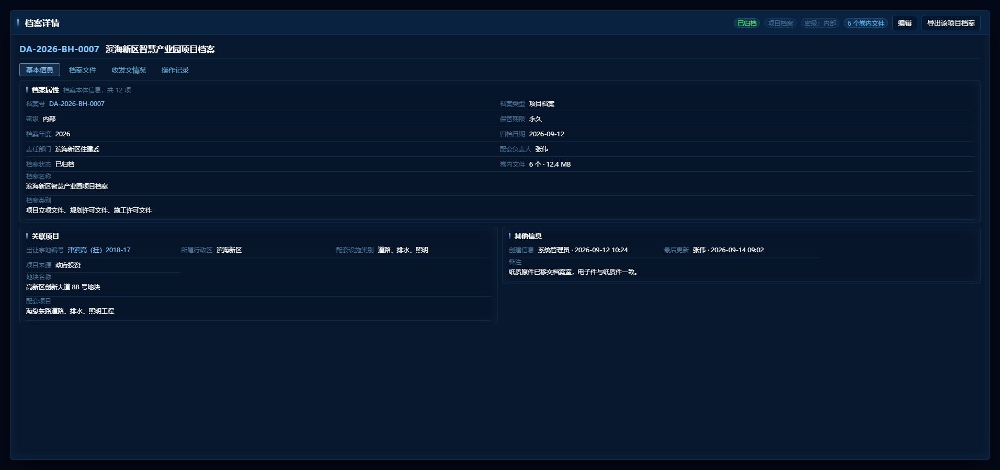
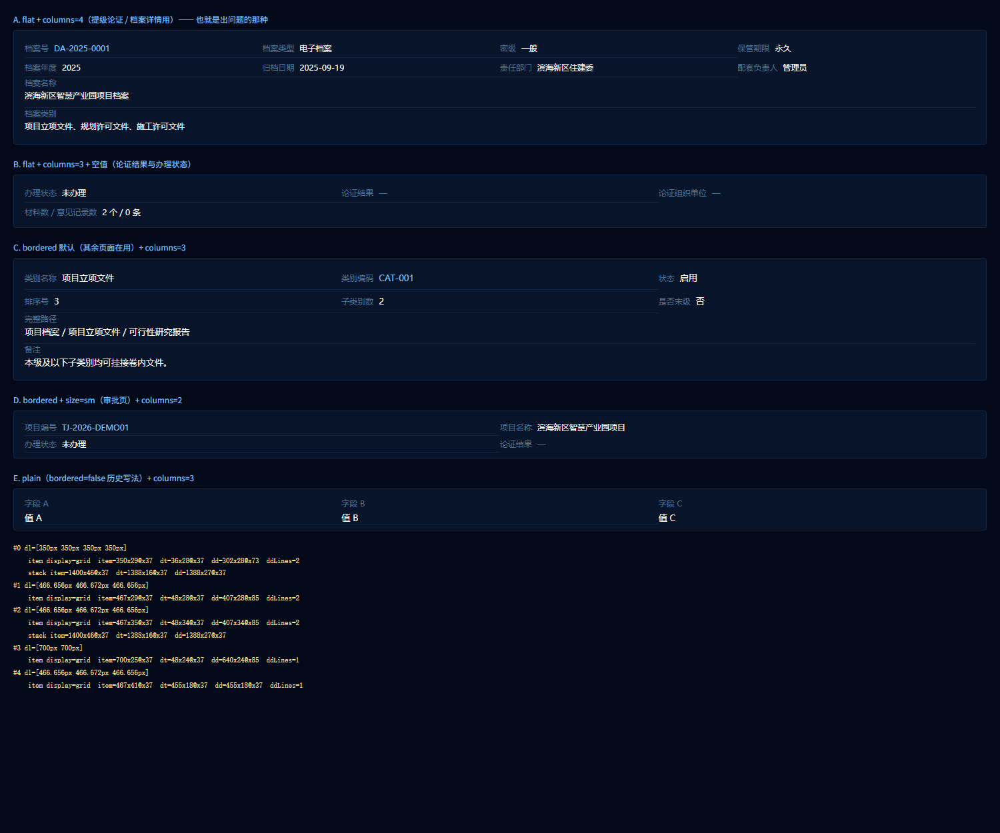

同一批数据、同一套设计令牌（screen-tokens.less），只改版式。
改前数据取自你给的截图；改后为按组件真实 CSS 结构的 1:1 复现（1912×1100）。

display:contents，一旦它没生效，
dt/dd 就退化成两个块级子元素，整页变成这种超高版面。
现在单元格自包含，不再依赖 display:contents

stack 独占整行；
行高 31px；分组卡内边距 16px → 12px

align-items: start 让两列各自收口、不互相拉伸留白

